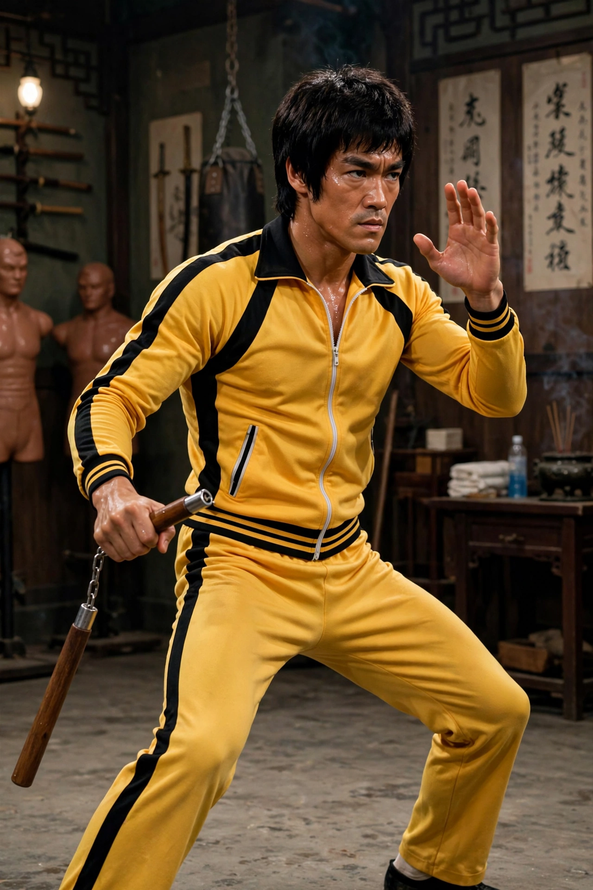

Hong Kong-American martial artist and actor (1940–1973)
| Bruce Lee | |
|---|---|
 Lee in Game of Death attire | |
| Born | Lee Jun-fan, 27 November 1940, San Francisco, California, U.S. |
| Died | 20 July 1973 (aged 32), Kowloon Tong, Hong Kong |
| Occupation | Martial artist, actor, director, philosopher |
| Martial art | Jeet Kune Do (founder); Wing Chun |
Bruce Lee (born Lee Jun-fan; 27 November 1940 – 20 July 1973) was a Hong Kong-American martial artist, actor, director, and philosopher. He is widely considered the most influential martial artist of all time and a pop culture icon of the 20th century, credited with promoting Hong Kong action cinema and transforming the portrayal of East Asians in American film.
Lee was born in San Francisco to a Cantonese opera singer father and raised in Kowloon, Hong Kong, where he appeared in films as a child actor. He studied Wing Chun under Ip Man, and after emigrating to the United States in 1959 he studied drama and philosophy at the University of Washington and opened martial arts schools in Seattle and Oakland.
Lee gained American attention as Kato in the television series The Green Hornet (1966–67). Frustrated by limited roles in Hollywood, he returned to Hong Kong, where The Big Boss (1971) and Fist of Fury (1972) broke box-office records across Asia. He wrote, directed, and starred in The Way of the Dragon (1972), famously fighting Chuck Norris in the Roman Colosseum, and completed Enter the Dragon (1973) for Warner Bros. — the first kung fu film produced by a Hollywood studio.
Lee founded Jeet Kune Do, a hybrid philosophy emphasising interception, economy of motion, and "absorbing what is useful" from all styles, summed up in his maxim "Be water, my friend." On 20 July 1973, weeks before the release of Enter the Dragon, he died in Hong Kong from cerebral edema at age 32. His unfinished film Game of Death, featuring his yellow-and-black tracksuit, was released posthumously in 1978.
Lee's films sparked the 1970s kung fu craze, inspired generations of martial artists and action stars such as Jackie Chan, and reshaped global action choreography. Statues of Lee stand in Hong Kong, Los Angeles, and Mostar, and his writings on martial philosophy remain in print.